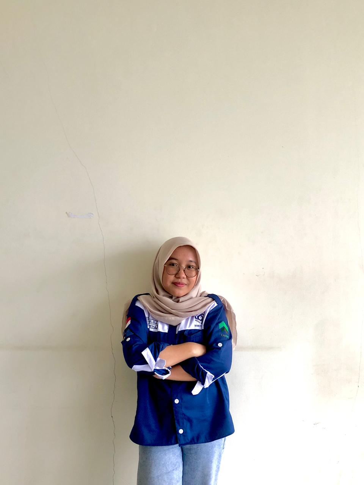

Ubah ke Tema Gelap
Profil Saya
Profil dari Syifa Maulida, mari mengenal saya!
Beranda
Riwayat Pendidikan
Pengalaman
Kontak
Tentang Saya
Biodata Singkat

Nama :
TTL :
Alamat :
Agama :
Pekerjaan :
Syifa Maulida
Suliliran Baru, 18 April 2024
Suliliran Baru
Islam
Mahasiswa Informatika ITK
Skill:
HTML
0%
CSS
0%
JavaScript
0%
Pengalaman
Aktivitas Saya
Mahasiswa Informatika Angkatan 2022
Sekertaris Departemen Sosial Masyarakat 2024/2025
Ketua Putri Pramuka ITK 2024/2025
PJ Sprit ITK 2022 di SMKN 1 Tanah Grogot
Panitia Sponsorship Infinite Vol.2
Panitia Creative Media Infinite Vol.3
Tempat tinggal
Kontak
LinkedIn
Instagram
GitHub
Copyright Syifa Maulida